| Step | Records | |
|---|---|---|
| 0 | Raw report records parsed | 24,812,425 |
| 1 | Removed: FDA-retracted cases | −68,088 |
| 2 | Removed: superseded case versions | −4,101,123 |
| 3 | **Distinct cases analysed** | **20,643,214** |
Adverse event reporting in FAERS, 2004–2026
FDA Adverse Event Reporting System, 2004Q1–2026Q2
Abstract
Across 20.6 million retained cases, the two most frequent entries in the reaction field are DRUG INEFFECTIVE and OFF LABEL USE — neither is a clinical event. How a drug is named changes its estimates: FAERS records ATORVASTATIN and ATORVASTATIN CALCIUM as separate substances, splitting one drug almost evenly; resolved to a single active moiety it holds 547,249 reports and 5,257 rhabdomyolysis co-reports. The highest-scoring associations in the corpus are dominated by diagnostic procedures and treated conditions rather than harms. Separate adjustment for sex, age or calendar period left 98.5–100% of sampled signals above threshold, though most showed statistically detectable variation across strata. Methods, source coverage and reproduction are in the final sections.
What these data are
FAERS records suspected adverse events reported during medical-product use. A report names the patient’s drugs and the reactions observed, but not which drug is held to have caused which reaction — that field does not exist — and no report is validated before entry.
These reports support analyses of reporting associations. They do not establish causation, and they cannot give incidence: the number of people who took a drug without incident is unknown.
NoteProvenance
90 quarterly archives, 3,547,347,845 bytes, 2004Q1–2026Q2, each pinned by SHA-256. 24,812,425 raw report records parsed into a canonical schema spanning both the LAERS (2004Q1–2012Q3) and FAERS (2012Q4–) eras.
How much of the database is actually distinct
A case is resubmitted every time follow-up information arrives, and each submission appears in a different quarterly file. Counting submissions therefore overcounts patients. Separately, FDA publishes lists of cases it has withdrawn.
16.8% of the raw corpus is redundant — 4.0 million superseded case versions, counted again each time a case was resubmitted with new follow-up information.
82,313 cases were opened under LAERS and followed up under FAERS. These only link because case identifiers survived the 2012Q4 transition; an analysis treating the two eras as separate datasets would double-count every one of them.
A second duplicate class exists: the same incident submitted independently by, say, a patient and their physician, under different case ids. Those cannot be collapsed by identifier because they share none. They are estimated separately by record linkage — see Independent duplicates below — and are not removed from the figures here.
The corpus, and who is in it
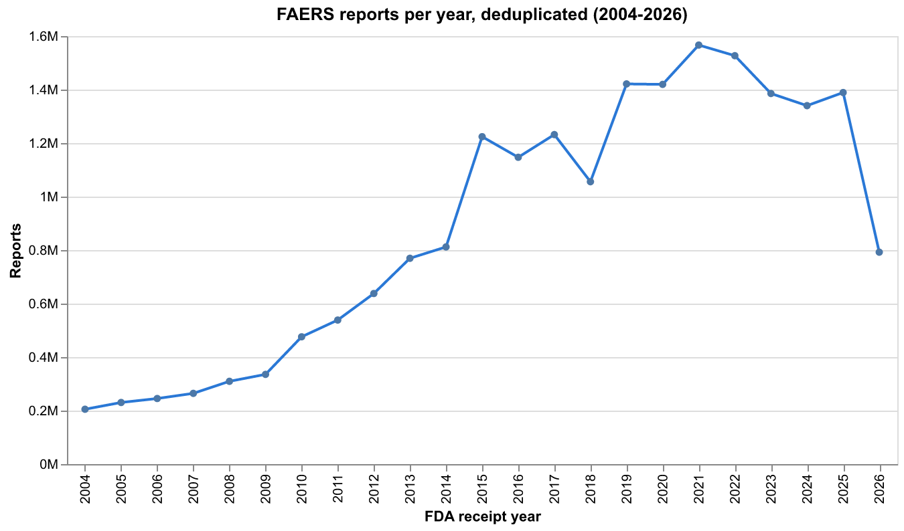
Reports grew roughly sevenfold, from 205,152 in 2004 to a peak near 1.57 million in 2021. 2026 is partial. Growth of this size over 22 years is itself a confounder: a drug approved in 2022 is evaluated against a baseline dominated by reports that predate it, which is why calendar period is adjusted for later.
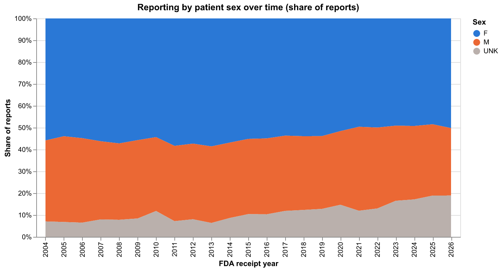
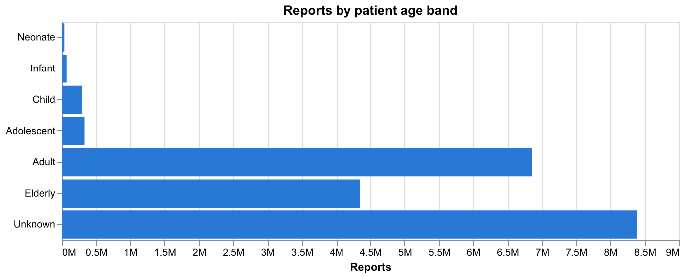
Among reports recording a sex, 60.3% are female. The more consequential number is what is missing: 41% of reports record no usable patient age at all. Any age-stratified conclusion rests on the 59% that do, and that subset is not a random sample.
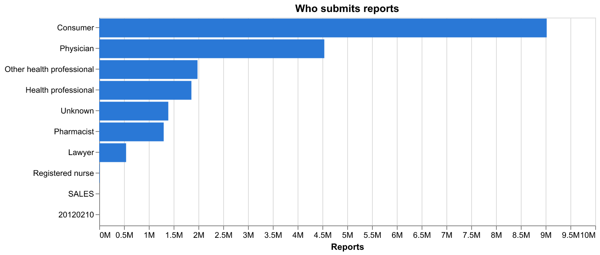
Consumers now file more reports than physicians — 8.88 million against 4.46 million. This is a genuine change in the character of the database rather than a processing artifact, and it cuts against the intuition that FAERS is primarily a clinician-reported system. Consumer reports carry less clinical detail, which is part of why the missing-age fraction is so high.
What is reported
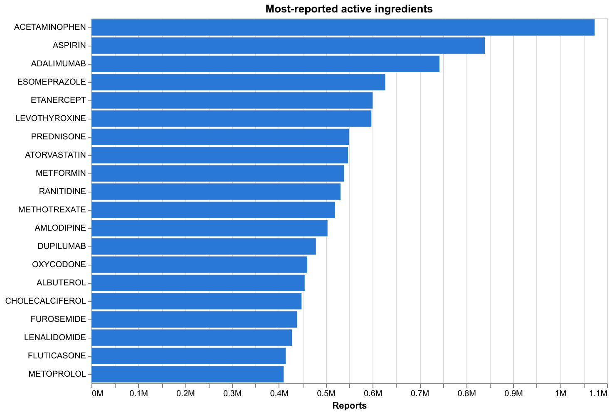
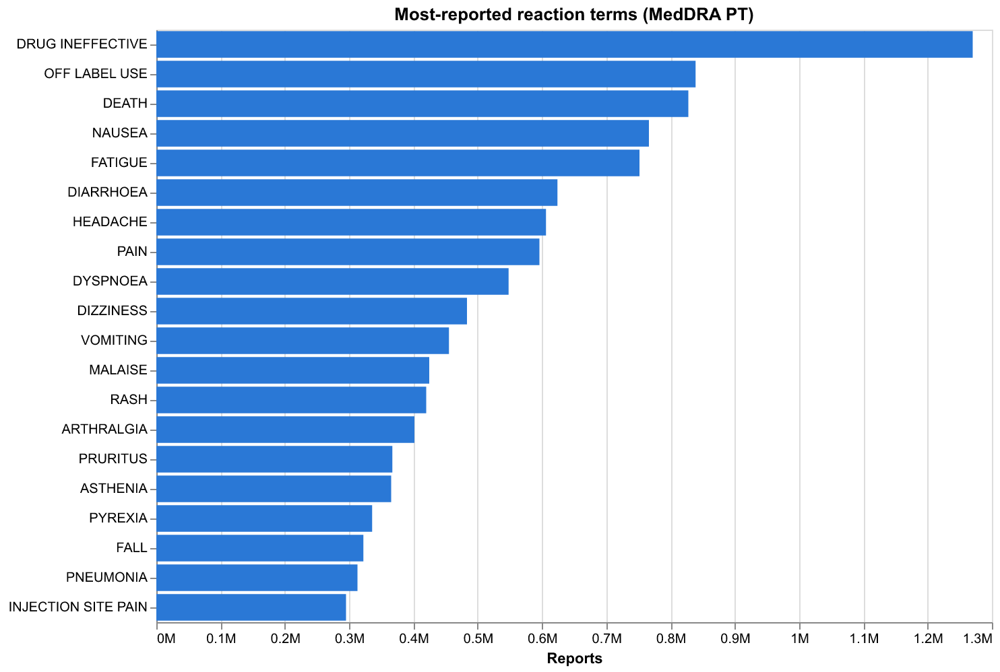
Acetaminophen has displaced aspirin at the top since 2020. The leading reactions are worth reading carefully: DRUG INEFFECTIVE (1.27M) and OFF LABEL USE (839k) outrank every clinical event. Neither is an adverse reaction — they are reasons a report was filed. DEATH ranks third, and is an outcome whose cause is unstated. The most frequent entries in the reaction field are substantially not reactions.
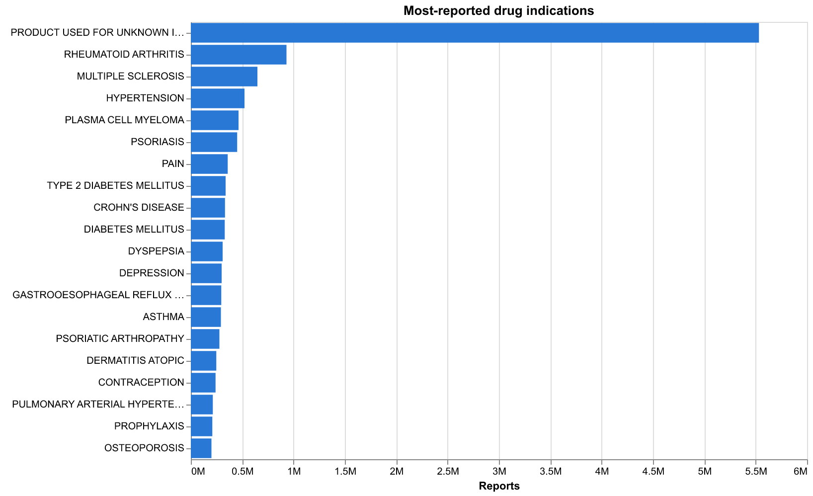
The single most common indication, by a factor of six, is PRODUCT USED FOR UNKNOWN INDICATION (5.43M). Stratifying by indication — the obvious way to control for why a drug was prescribed — is therefore unavailable for a quarter of the corpus.
The structure of a report
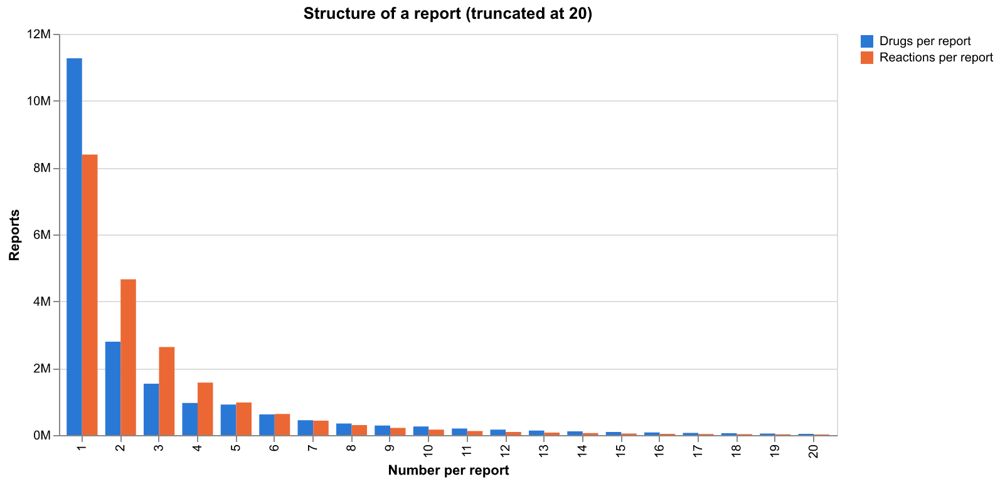
A report carries a median of one drug (mean 3.18) and 2.98 reactions. The mean is pulled up by a long tail: the largest single report lists 171 drugs and 456 reactions, contributing 39,648 drug–event combinations on its own. Those combinations share one case; they are not 39,648 independent observations. Across the corpus the reaction and drug fields generate 127,972,661 such combinations.
A report listing three drugs and three reactions yields nine co-occurrences without identifying which drug is suspected of which reaction.
Dechallenge and rechallenge
Withdrawing a drug and seeing the reaction abate, then reintroducing it and seeing the reaction return, is the strongest evidence a spontaneous report can carry about a drug’s involvement.
Computed from the joint distribution, with missing values kept distinct from negative outcomes:
| Category | Records | Share | |
|---|---|---|---|
| 0 | Drug records total | 83,543,310 | 100% |
| 1 | Suspect drug, positive dechallenge AND positiv... | 122,852 | 0.147% |
Among suspect drug records — the population the question is really about — 103,665 of 41,799,712 carry both a positive dechallenge and a positive rechallenge: 0.248%, about one in 400. Against all drug records including concomitants it is 0.147%.
Absence of those fields is not evidence against involvement; most reports simply never record a challenge outcome. What the number bounds is how often the database contains this particular kind of corroboration, not how often a drug was responsible.
Which drug–event pairs report disproportionately
Every measure below is computed on a 2×2 table of reports, restricted to primary and secondary suspect drugs, for pairs with at least 3 co-reports — 2,008,778 pairs over 20,639,040 reports.
Four screening rules are applied. All four are reported because none is authoritative, and their disagreement is informative.
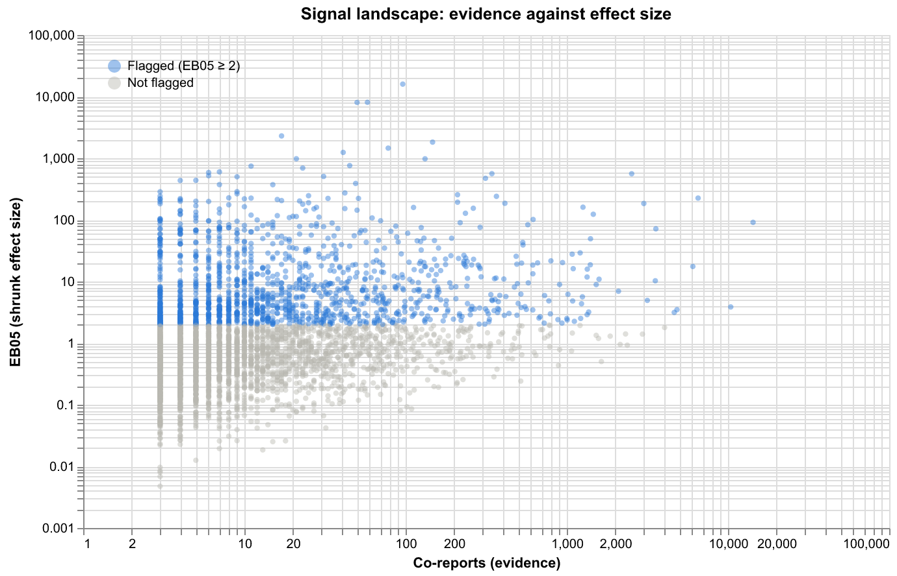
Each point is a drug–event pair: evidence on the x-axis, shrunk effect size on the y. Both axes are logarithmic because the corpus spans four orders of magnitude on one and three on the other. The flagged pairs are the band above EB05 = 2; note how many sit at the far left, carrying a large effect size on only a handful of co-reports. Those are the pairs shrinkage exists to discipline, and the reason screening happens on the lower bound rather than the point estimate.
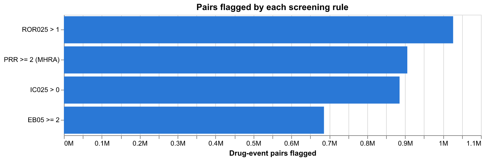
| Rule | Pairs flagged | |
|---|---|---|
| 0 | ROR₀₂₅ > 1 (reporting odds ratio) | 1,030,802 |
| 1 | PRR ≥ 2, χ² ≥ 4 (MHRA) | 909,045 |
| 2 | IC₀₂₅ > 0 (BCPNN, WHO-UMC) | 888,898 |
| 3 | EB05 ≥ 2 (MGPS, FDA) | 688,879 |
| 4 | Fisher exact, BH q < 0.05 | 949,944 |
ROR, IC and EBGM are screened on a lower bound (ROR₀₂₅, IC₀₂₅, EB05); the MHRA rule combines a point estimate with a χ² threshold, and the FDR rule is a multiplicity-corrected p-value. They are not interchangeable criteria.
EB05 is the most conservative at 688,879 pairs and is very nearly a subset of the others: 688,879 pairs satisfy all four of ROR, PRR/χ², IC and EB05 simultaneously.
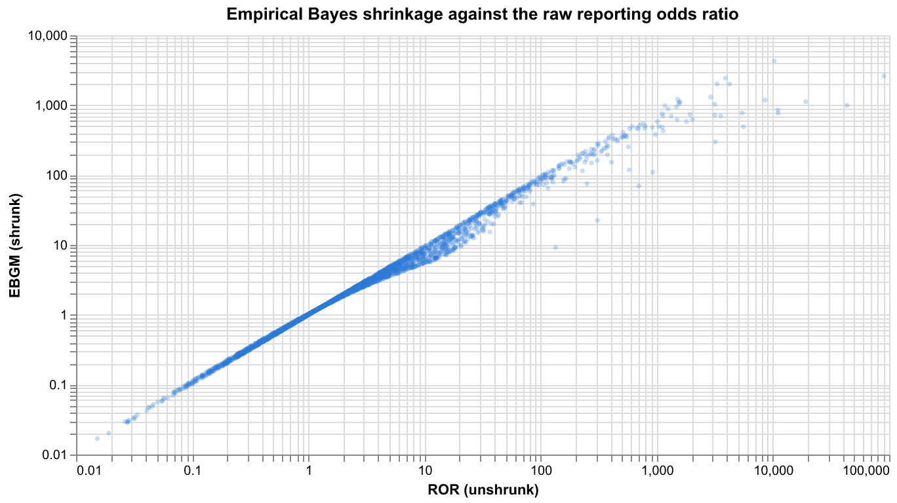
| Hyperparameter | Fitted value | |
|---|---|---|
| 0 | α₁ | 0.9705 |
| 1 | β₁ | 0.3841 |
| 2 | α₂ | 0.3791 |
| 3 | β₂ | 0.00307 |
| 4 | w (mixture weight) | 0.8087 |
| 5 | Converged | True |
The gamma-Poisson mixture converged from multiple starting points. Points fall below the diagonal precisely where evidence is thin — an extreme raw ratio from a handful of reports is pulled back toward the null, while a ratio supported by thousands of reports is left alone.
Does it recover what we already know?
Nine associations that appear on approved product labelling, several as boxed warnings, were looked up in the output:
| Ingredient | Reaction | Co-reports | ROR₀₂₅ | EB05 | IC₀₂₅ | |
|---|---|---|---|---|---|---|
| 0 | Allopurinol | Stevens-Johnson Syndrome | 1,058 | 42.2 | 39.0 | 5.23 |
| 1 | Clozapine | Agranulocytosis | 2,422 | 24.2 | 20.9 | 4.36 |
| 2 | Warfarin | Haemorrhage | 4,616 | 15.1 | 13.6 | 3.76 |
| 3 | Isotretinoin | Depression | 6,850 | 12.1 | 10.6 | 3.39 |
| 4 | Lisinopril | Cough | 3,984 | 5.6 | 5.2 | 2.37 |
All nine met every screening criterion. Metformin–lactic acidosis has 21,396 co-reports against an expectation two orders of magnitude lower; amiodarone–pulmonary toxicity has 1,125. As a comparison pair, aspirin–alopecia returns EB05 = 0.19 and is not flagged — one unflagged pair does not establish specificity.
What ranks highest
Among pairs with at least 200 co-reports, the highest EB05 scores belong to associations with diagnostic procedures and treated conditions rather than to harms:
| Ingredient | Reaction term | Co-reports | EB05 | |
|---|---|---|---|---|
| 0 | Proplex T | Hepatitis c virus | 293 | 9,941 |
| 1 | Technetium Tc-99M Tetrofosmin | Radioisotope scan abnormal | 258 | 9,805 |
| 2 | Isosorbide Dinitrate | Cardiospasm | 363 | 6,591 |
| 3 | Vitamin K1 | Appendicolith | 203 | 5,927 |
| 4 | Flupenthixol | Anosognosia | 401 | 5,648 |
| 5 | Gadolinium | Gadolinium deposition disease | 312 | 5,615 |
Technetium Tc-99m tetrofosmin is a cardiac imaging tracer: it is administered in order to perform the scan whose abnormality is then recorded, 257 times against an expected 0.02. Flupenthixol and anosognosia (400 co-reports, expected 0.06) pairs an antipsychotic with a feature of the psychosis it treats — unawareness of one’s own illness. Proplex T, a clotting-factor concentrate withdrawn in the 1990s, pairs with hepatitis C virus at 293 co-reports, reflecting the plasma-derived contamination of that era.
Each association is real. None is a newly detected harm. Disproportionality measures how often terms co-occur relative to expectation; it does not distinguish a drug’s effect from its indication, its administration context, or a term that names its own cause.
Three signals, checked against the literature
The corpus is large enough that plausible-looking associations are cheap. These three were taken from the top of the EB05 ranking, excluding the procedure and indication artefacts above, and then looked up in the published literature.
| Drug | Reaction | Co-reports | Expected | EB05 | |
|---|---|---|---|---|---|
| 0 | Gadodiamide | Nephrogenic Systemic Fibrosis | 2,222 | 0.5 | 4,441 |
| 1 | Pentosan Polysulfate | Retinal Pigmentation | 607 | 0.2 | 2,990 |
| 2 | Belantamab Mafodotin | Keratopathy | 840 | 0.2 | 3,687 |
Gadodiamide and nephrogenic systemic fibrosis — 2,222 co-reports against an expected 0.5. NSF is a fibrosing condition of skin and internal organs seen in patients with advanced renal impairment. According to PubMed, the causal role of gadolinium-based contrast agents is established, with gadodiamide specifically implicated among the less stable linear agents, and preventive guidelines followed (DOI).
The reporting history shows what happened next:
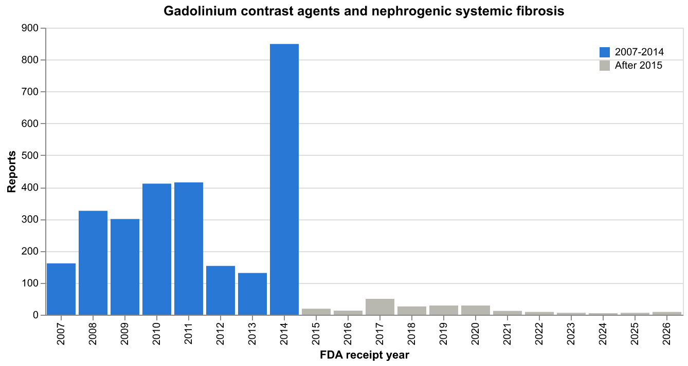
Reports begin in 2007, run through 2014, then collapse to single digits — 849 in 2014 against 6 in 2023. The association was recognised in 2006–2007 and FDA restricted gadolinium use in advanced kidney disease; the decline is what a successful intervention looks like in reporting data. It also shows why the pooled statistic understates the story: EB05 = 4,441 is computed across 22 years, but the exposure that generated it largely stopped a decade ago.
Pentosan polysulfate and retinal pigmentation — 607 co-reports against 0.2. Pentosan polysulfate is the only oral therapy approved for interstitial cystitis. According to PubMed, a progressive, dose-dependent pigmentary maculopathy affecting the retinal pigment epithelium is associated with long-term use, may progress after the drug is stopped, and prompted screening recommendations (DOI). This one is recent — first described in 2018, long after most of the drugs in this corpus were characterised.
Belantamab mafodotin and keratopathy — 840 co-reports against 0.2. Belantamab mafodotin is an antibody–drug conjugate for relapsed multiple myeloma. According to PubMed, 73% of patients in the DREAMM-2 trial had keratopathy, attributed to off-target damage to corneal epithelial cells by the drug’s cytotoxic payload (DOI).
What this does and does not show. All three are real, documented and in some cases label-carrying associations, which is evidence the ranking surfaces genuine safety signals alongside the indication artefacts. It is not evidence of discovery: these were found by looking at the top of a ranking and then reading the literature, which is the easy direction. A pair with no literature behind it would be indistinguishable here from one nobody has studied yet.
Do signals survive confounder adjustment?
Each variable is applied as a separate Mantel–Haenszel stratification, on a random sample of 18,693 signalling pairs.
| Adjustment | Pairs tested | Still signalling | Heterogeneous (Breslow–Day p<0.05) | |
|---|---|---|---|---|
| 0 | Sex | 18,693 | 18,691 (100.0%) | 9,360 (50%) |
| 1 | Age band | 18,407 | 18,159 (98.7%) | 13,883 (75%) |
| 2 | Calendar period (5y) | 18,437 | 18,276 (99.1%) | 13,995 (76%) |
Between 98.5% and 100% of sampled signals remained above the screening threshold after separate adjustment for sex, age band or calendar period. Passing a threshold is a weaker statement than being unchanged: a signal can weaken substantially and still clear it.
Breslow–Day rejects a common odds ratio across strata for 50–76% of the pairs tested. Where it does, the pooled estimate averages materially different stratum-specific values and should not be read alone. At these sample sizes the test detects differences far too small to matter clinically, so the stratum-specific estimates, not the p-values, are what carry interpretation. Statistical heterogeneity here is not evidence of biological effect modification.
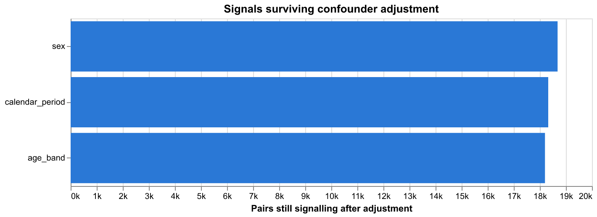
Reporting artefacts over time
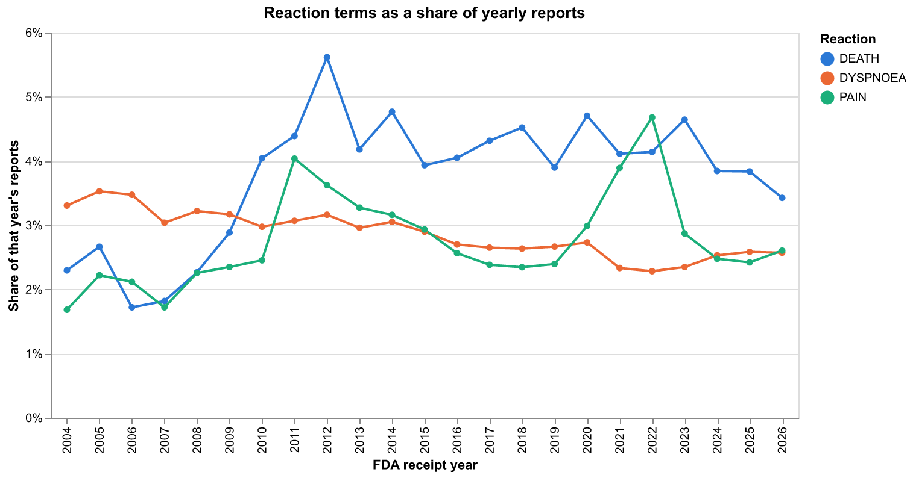
Raw yearly counts rise with the corpus, so a rising count is not by itself a rising rate. Plotted as a share of each year’s reports, the apparent upward trend in DEATH is substantially the database growing rather than the term becoming more common.
Drug names that are not ingredients
The unit of analysis is supposed to be the active ingredient. For a large minority of entries it is not: the reported string was a brand or product name that the resolution cascade could not map, and it survives into the results under its own name.
| Distinct ingredients in the signal table | Resolved by a curated path | Free-text fallback only | |
|---|---|---|---|
| 0 | 7,179 | 5,179 (72.1%) | 2,000 (27.9%) |
The consequence is not cosmetic, and it runs in two directions at once. When HUMIRA . PEN is counted separately from ADALIMUMAB, adalimumab’s marginal is understated — the reports filed under the brand never reach it. Meanwhile the brand string carries a small marginal of its own, which inflates its disproportionality: it is being compared against the whole database on a fragment of its true exposure. Both the numerator and the denominator are wrong, in opposite directions.
Two free sources close most of this gap, and the pipeline uses both: FDA’s NDC directory (public domain, 7,958 brand tokens usable after an ambiguity filter) and NLM’s RxNav. Together with stricter cleaning of device and product designators, they consolidate brands into their substances — DURAGESIC-100 into fentanyl, ADVAIR DISKUS 100/50 into fluticasone and salmeterol, PARAGARD 380A into copper. The fallback-only count fell from 3,838 to 2,008.
A second split ran alongside the brand one and was easy to miss because both halves looked like real substances. FAERS records ATORVASTATIN and ATORVASTATIN CALCIUM, and counting them separately divided one drug almost exactly in half — 275,333 reports against 269,328. The same happened to warfarin, amlodipine and metformin. Salt forms are now resolved to their active moiety through RxNorm, which gets the hard cases right without a heuristic: SODIUM CHLORIDE and CALCIUM CARBONATE are returned unchanged, where stripping a suffix would have produced “sodium” and “calcium”.
NoteReading the percentage above
The fallback share rose when salts were merged, from 23.5% to the figure in the table, while the fallback count fell slightly. Merging affected curated ingredients — the ones RxNorm knows — far more than unmapped free text, so the denominator shrank faster than the numerator. The absolute problem got smaller; the ratio did not.
The effect on real signals is visible: atorvastatin–rhabdomyolysis rose from 2,397 co-reports (EB05 = 15.5) to 2,794 (EB05 = 28.6) once Lipitor’s reports joined the substance they belong to. The signal was always there; part of its evidence was filed under another name.
A residue remains and always will. Discontinued brands appear in neither reference, and foreign and misspelled products appear in nothing at all. Those entries keep their reported name and are marked ingredient_curated = false in the published table, so they can be filtered rather than mistaken for substances.
One correction to an earlier draft of this report, which claimed these rows fall below the minimum-support threshold and never enter the signal tables: they do enter it, and always did. The claim was inferred from the min_count rule rather than measured, and it was wrong.
Do reaction profiles recover pharmacology?
If two drugs act through the same mechanism, they may provoke the same pattern of reported reactions. Drugs are compared by cosine similarity on their information-component profiles, so that what is compared is each drug’s distinctive reaction pattern rather than the ubiquitous terms every profile contains.
Within-class similarity runs 3.0–5.8× the corpus average, highest for bisphosphonates and lowest for ACE inhibitors, with no class information supplied to the algorithm:
| Drug class | Members | Within-class similarity | Vs. corpus average | |
|---|---|---|---|---|
| 0 | Statins | 5 | 0.3441 | 3.83× |
| 1 | ACE inhibitors | 5 | 0.2940 | 3.28× |
| 2 | TNF inhibitors | 5 | 0.5409 | 6.03× |
| 3 | SSRIs | 5 | 0.5785 | 6.45× |
| 4 | Bisphosphonates | 5 | 0.4120 | 4.59× |
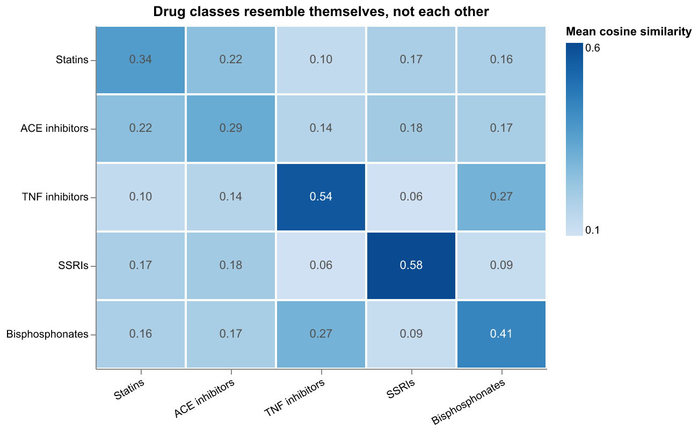
The diagonal is the validation made visible. One off-diagonal cell is worth a second look: TNF inhibitors and bisphosphonates sit well above every other cross-class pair — unsurprising once stated, since both are given to overlapping rheumatology populations, and a further reminder that this measure tracks therapeutic neighbourhood rather than mechanism.
Every class is 3.0–5.8× more similar to itself than the corpus average, without any drug-class information entering the computation. The nearest neighbours are recognisable pharmacology:
| Drug | Nearest by reaction profile | |
|---|---|---|
| 0 | Lisinopril | Ramipril (0.43), Diltiazem (0.40), Candesartan... |
| 1 | Adalimumab | Infliximab (0.61), Etanercept (0.54), Ustekinu... |
Atorvastatin’s neighbours are other statins and ezetimibe — a different mechanism, but the same therapeutic setting and co-prescription pattern. Adalimumab sits beside infliximab and etanercept, then ustekinumab: TNF inhibitors first, then a biologic used for overlapping indications. Sertraline sits among SSRIs, then venlafaxine, an SNRI.
That last detail is the honest caveat. This measure cannot separate shared mechanism from shared indication or shared co-prescription — the same confound that puts indication bias at the top of the disproportionality rankings. It recovers therapeutic neighbourhoods reliably; reading a specific mechanism into any one pair requires evidence from outside these data.
Vocabulary drift, measured
MedDRA is revised twice a year and terms are added, renamed, split and merged, so a reaction term’s frequency can move for reasons unrelated to patients. Confirming a specific revision needs the licensed release history. Flagging trajectories for review does not.
| Measure | Value | |
|---|---|---|
| 0 | Terms tested (>= 200 reports) | 7,417 |
| 1 | Flagged as drift-suspect | 2,363 (31.9%) |
| 2 | - absent early, established later | 642 |
| 3 | - established early, absent later | 191 |
| 4 | - abrupt step between adjacent quarters | 1,683 |
| 5 | Share of reaction mentions involving a flagged... | 16.4% |
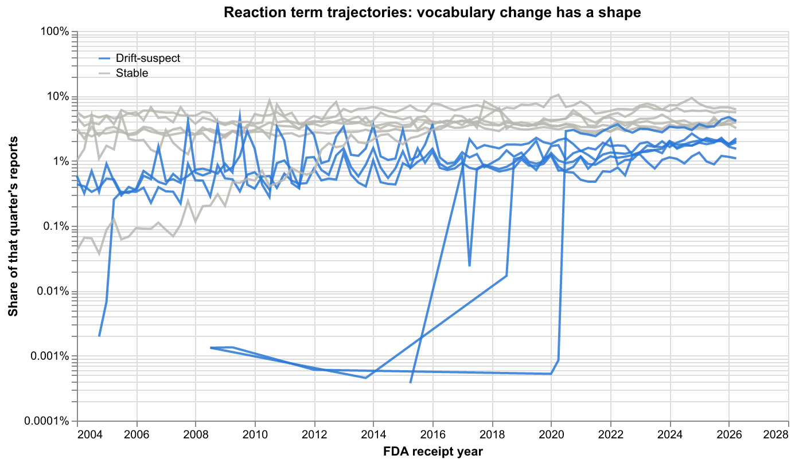
Grey terms hold a steady band; the flagged ones move by orders of magnitude between adjacent quarters. That shape is the whole basis of the flag — a real clinical trend does not switch on in one quarter and stay on.
Terms flagged for abrupt onset, disappearance or a step change account for 16% of reaction mentions. The flags identify trajectories worth reviewing; they do not establish that a MedDRA revision caused any particular one. An abrupt change in a term’s frequency has several possible causes, and this detector does not distinguish between them.
Per-term flags are in results/drift/term_drift.parquet. A rename between two similar terms produces a fall and a rise and is caught on both sides; a gradual merge may not be visible at all, so the flagged set is neither exhaustive nor confirmed.
Independent duplicates
Deduplication earlier in this report collapsed case versions — follow-up submissions carrying the same case id. It cannot see the other kind of redundancy: one incident reported separately by the patient, the physician and the manufacturer, each becoming a distinct case with its own id. FDA does not link these and no field identifies them.
Detected here by record linkage: block on sex, five-year age band, event year-month, reporter country and a shared drug and a shared reaction, then score candidate pairs on how much their drug and reaction sets overlap.
| Measure | Value | |
|---|---|---|
| 0 | Records eligible for linkage | 6,266,385 (30.4% of corpus) |
| 1 | Candidate pairs compared | 5,417,215 |
| 2 | Pairs above similarity threshold | 1,286,568 |
| 3 | Suspected duplicate clusters | 298,238 |
| 4 | Redundant records (all but one per cluster) | 594,292 |
| 5 | As a share of eligible records | 9.5% |
| 6 | As a share of the whole corpus | 2.9% |
Linkage was possible for 30% of cases — the rest lack a sex, an age, an event date or a reporter country, and cannot be blocked. Within that subset the matcher classified 9.4% as redundant, equivalent to 2.7% of the full corpus. Its precision, and the duplication rate among the 70% never examined, are both unknown, so neither figure bounds the true rate.
Suspected duplicates remain in every analysis in this report. Removal is a parameter (duplicates.remove), off by default.
Limitations
- No causality, no incidence. These are reporting associations. The number of people exposed without an event is unknown, so no rate can be computed.
- The drug column is not uniformly a substance. 28% of distinct drug labels reaching the signal table are unmapped product names, flagged
ingredient_curated = false. Splitting one substance across several names changes both its co-report and its marginal counts. - MedDRA terms are treated as stable strings across 22 years. Terms flagged for abrupt trajectory change account for 16% of reaction mentions; whether a terminology revision caused any given one is unverified, and confirming it needs the licensed release history.
- Independent duplicates are estimated, not removed, and remain in every table here. The estimate covers only the 30% of cases that could be blocked, with unknown matcher precision.
- No pharmacologic class vocabulary. RxNorm→ATC mapping needs a UMLS licence. The similarity section compares drugs against five hand-specified reference classes; it does not use a class hierarchy, and its groupings reflect therapeutic neighbourhood rather than mechanism.
- q-values are approximate. Benjamini–Hochberg assumes independence or positive dependence. Drug–event tests share reports and are dependent.
- Partial dates given as a year or year-month are completed to the start of the period, biasing those records toward January and month-starts.
Reproducing this
git clone https://github.com/neksa/openfda-faers && cd openfda-faers
uv sync
dvc reproNo credentials and no cloud storage are needed: FDA hosts the source archives, dvc.lock pins every intermediate by hash, and results/source_manifest.json records a SHA-256 for each of the 90 inputs. FDA republishes quarterly extracts as snapshots and can revise them in place, so faers verify reports drift against those checksums rather than letting it change the numbers silently.
Full run is roughly 25 minutes on a 10-core laptop, dominated by the download.